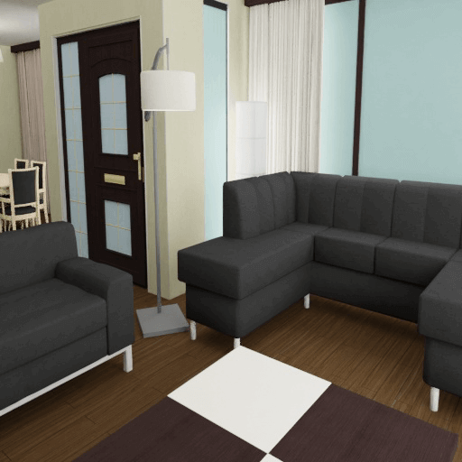
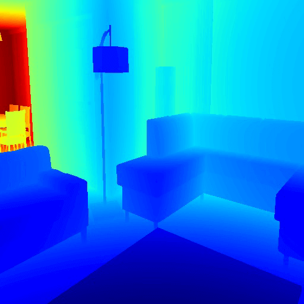
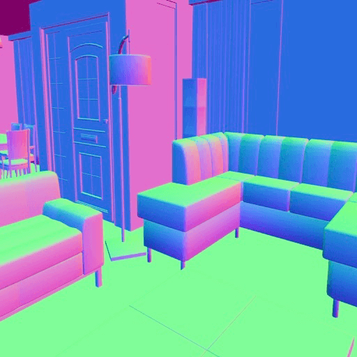
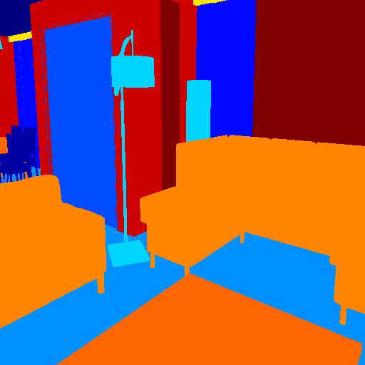
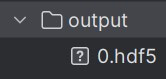
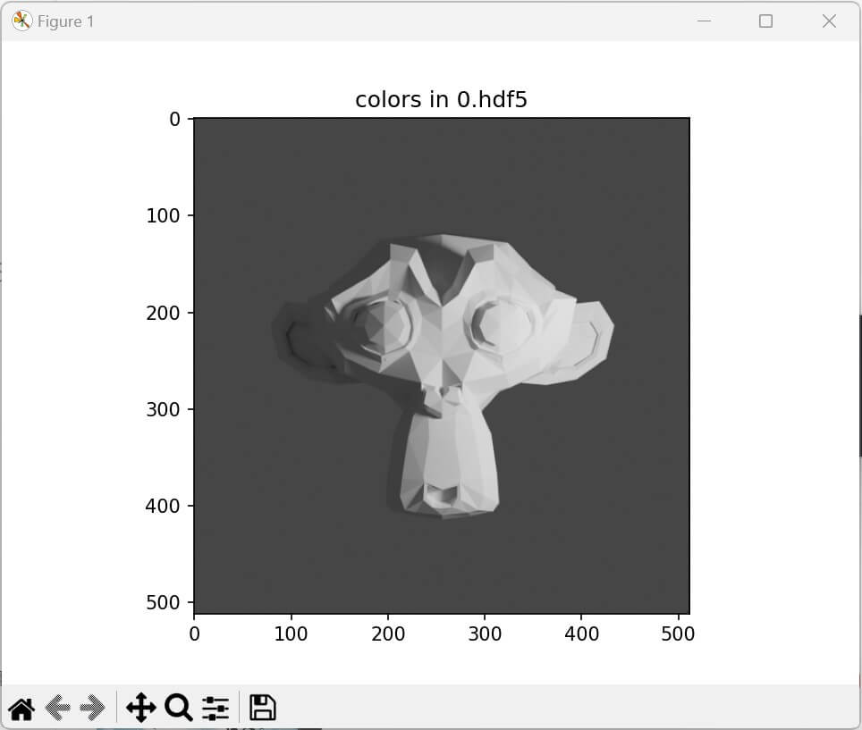
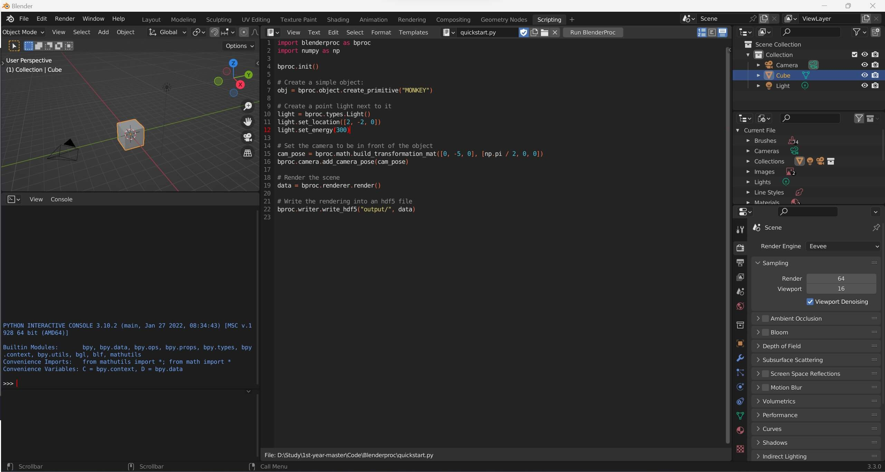
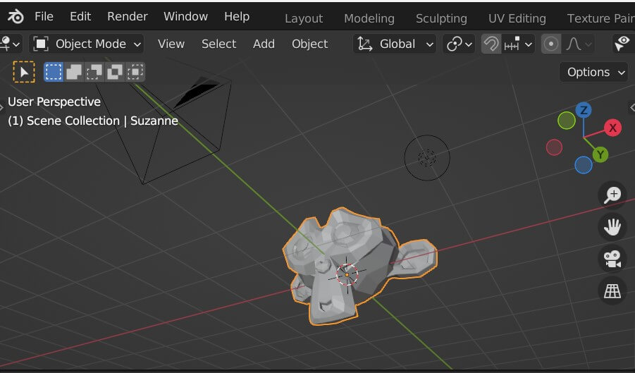

资源
-
PaperWithCode：BlenderProc | Papers With Code
论文
在过去几年中，对可用于训练的高质量图像的需求急剧上升。在姿态估计和实例分割中，人工标注数据的工作量巨大。为了避免这种情况，我们提出了 BlenderProc。
Config
作为一般配置，我们使用 YAML 文件。每个配置文件包含三个部分：
- 第一部分是
Setup：
"setup": {
"blender_install_path": "/PATH",
"blender_version": "blender-2.80",
"pip": [
"h5py",
"imageio"
]
}- 名为
global的第二部分描述了设置：
"global": {
"all": {
"output_dir": "<args:0>"
}
}- 第三部分是
modules，配置中的顺序了执行顺序。每个模块都有一个名称，该名称对应于模块文件夹的名称和类名，管道将动态加载相应的类。这个类必须从我们的模块基类派生，并将执行其中的代码，这里的相应设置将传递给它。
"modules": [
{
"name": "main.Initializer"
},
{
"name": "loader.ObjLoader",
"config": {"path": "<args:1 >"}
}
]LOADER
加载器模块将各种 3D 网格加载到场景中，此外还将所有其他对象（如灯和相机）加载到场景。
RENDERER
渲染器有几个选项：
-
resolution_x, resolution_y：待渲染图像的分辨率 -
samples：渲染场景的采样数量，越多的采样可以减少噪声 -
render_depth：渲染当前图像的深度 -
stero：启动立体声图像的渲染
Color renderer
{kind=link}

-
min_bozes，max_bozes：限制每条光线可以进行的反弹次数；越高，结果的质量越好，但渲染速度越低 -
glossy_bounces：光泽反射反弹的最大数量必须大于零，这样才能看到光泽效果
Depth renderer
{kind=link}

该渲染器基于 blender 的内部深度估计生成深度图像。
Normal renderer
{kind=link}

许多深度学习任务通过引入法线作为训练问题的输入而大大改进。其中一个问题是例如深度估计。法线被规格化并显示为 XYZ 值。
Segmentation renderer
{kind=link}

为了进行分割，每个对象都需要一个类别 id，在 suncg 加载程序中，它们已经被正确设置。对于您自己的加载器，您必须手动执行此操作，方法是将属性 category_id 添加到所有对象中。此属性包含数据集中类的编号。
可以创建实例分割掩码，其中不仅保存索引，还保存一个字典，该字典将索引映射到类和实例号。这两个文件都存储在 .hdf5 文件中，这使得使用更加容易。
要在语义分割和实例分割之间切换，可以使用以下设置：
map_by：如果设置为class，则完成基于category_id的语义分割。如果设置为instance，则执行实例分割。
SAMPLER
BlenderProc 包含多个采样器，通常用于灯光、相机和对象。
以下是在生成光源或相机位置时如何轻松使用采样器的两个示例。
"location": {
"name": "Uniform3dSampler",
"parameters": {
"min": [0, 0, 0],
"max": [1, 1, 1]
}
} 此外，每个采样器都可以进行接近度检查。
"location": {
"name": "SphereSampler",
"parameters": {
"center": [0, 0, 1],
"radius": 4,
"mode": "SURFACE"
}
} 可以对相机进行采样，然后检查该位置是否距离任何对象至少一米，以及场景中对象的平均距离是否在一定范围内。这些选项可以在逻辑上任意组合，这使得创造完美的条件变得容易。在这个例子中，要求相机距离其视野中的任何物体至少一个单位，并且其值上的平均距离在 1 到 4 个单位之间。只有这样才能使用姿势。
"proximity_checks": {
"min": 1.0,
"avg": {
"min": 1.0,
"max": 4.0
}
}GENERATION TIME
生成是以批处理的方式离线完成的，如果相机姿势已经采样，那么每个场景只调用特定的渲染器，最后每个相机姿势的所有文件都会合并到 .hdf5 文件中。对于 suncg 文件，我们可以在一个 gpu 上每小时生成大约 3.000 张图像。然而，这些场景相当复杂，在大多数情况下，渲染速度甚至应该比这更快。尽管如此，速度对我们来说并不是什么大问题，因为我们认为生成通常不是一个重复的过程。因此，花一个周末在上面，然后拥有 18 万张图像通常就足够完成大多数训练任务了。
代码
Hello World
安装环境：
conda create -n blender python=3.10
conda activate blender
pip install Blenderproc 在 Pycharm 下使用该环境，创建一个 quickstart.py：
这段代码使用 BlenderProc 包创建了一个简单的场景：在场景中创建了一个猴子模型并添加了一个点光源，然后将相机设置在该模型前方，最后渲染场景并将结果写入 HDF5 文件。下面是这段代码的详细解释：
首先，通过导入 blenderproc 和 numpy 模块来初始化 BlenderProc。bproc.init() 函数用于初始化 BlenderProc 的渲染器和其他必要组件。
然后，使用 bproc.object.create_primitive() 函数创建了一个名为 "MONKEY" 的简单对象（即猴子模型）并存储在变量 obj 中。
接着，使用 bproc.types.Light() 函数创建了一个名为 light 的点光源对象，并将其位置设置为 [2, -2, 0]，能量设置为 300。这样一来，场景中的猴子模型将被点光源照亮。
接下来，使用 bproc.math.build_transformation_mat() 函数创建了一个相机姿态矩阵 cam_pose，并设置相机的位置为 [0, -5, 0]，朝向为 [np.pi / 2, 0, 0]。也就是说，相机被放置在场景中猴子的正上方，并指向猴子的正面。
接着，使用 bproc.camera.add_camera_pose() 函数将相机的位置和朝向应用到场景中。现在的场景已准备好进行渲染。
使用 bproc.renderer.render() 函数来渲染场景，并将结果返回给变量 data。
最后，使用 bproc.writer.write_hdf5() 函数将渲染结果写入文件。该函数的第一个参数是保存文件的路径和名称（不包括扩展名），第二个参数是要写入文件的数据。在这里，我们将渲染结果写入了名为 "output.hdf5" 的 HDF5 文件中。
import blenderproc as bproc
import numpy as np
bproc.init()
# Create a simple object:
obj = bproc.object.create_primitive("MONKEY")
# Create a point light next to it
light = bproc.types.Light()
light.set_location([2, -2, 0])
light.set_energy(300)
# Set the camera to be in front of the object
cam_pose = bproc.math.build_transformation_mat([0, -5, 0], [np.pi / 2, 0, 0])
bproc.camera.add_camera_pose(cam_pose)
# Render the scene
data = bproc.renderer.render()
# Write the rendering into a hdf5 file
bproc.writer.write_hdf5("output/", data) 在 shell 中输入：
blenderproc run quickstart.py 即可开跑（第一次跑会装一堆库）。
Selecting render devices...
Device NVIDIA GeForce RTX 4060 Laptop GPU of type OPTIX found and used.
Device 13th Gen Intel Core i9-13900HX of type CPU found and used.
Fra:0 Mem:8.80M (Peak 8.87M) | Time:00:00.74 | Mem:0.00M, Peak:0.00M | Scene, ViewLayer | Synchronizing object | Suzanne
Fra:0 Mem:8.85M (Peak 8.87M) | Time:00:00.74 | Mem:0.00M, Peak:0.00M | Scene, ViewLayer | Initializing
...
Fra:0 Mem:28.56M (Peak 48.98M) | Time:02:02.85 | Remaining:00:00.01 | Mem:0.33M, Peak:15.33M | Scene, ViewLayer | Sample 1008/1024
Fra:0 Mem:38.57M (Peak 52.57M) | Time:02:02.86 | Mem:0.33M, Peak:15.33M | Scene, ViewLayer | Sample 1024/1024
Saved: 'C:\XXX\rgb_0000.png'
Time: 02:03.50 (Saving: 00:00.32)
Merging data for frame 0 into output/0.hdf5
Blender quit
Cleaning temporary directory 运行完后，生成文件 output\0.hdf5：
{kind=link}

在 shell 中输入：
blenderproc vis hdf5 output/0.hdf5 即可查看可视化结果：
{kind=link}

在 shell 中输入：
blenderproc debug quickstart.py 即可打开 Blender 的 GUI 界面：
{kind=link}

点击 Run BlenderProc 即可开跑！
{kind=link}

Tutorials
Loading and manipulating objects
下载
如果还没有任何数据，BlenderProc 通过 CLI 为许多数据集和免费提供的资产提供下载功能：blenderproc
blenderproc download blenderkit <output_dir>：从搅拌机套件下载材料和模型blenderproc download cc_textures <output_dir>：从 cc0textures.com 下载纹理。blenderproc download haven <output_dir>：从 polyhaven.com 下载HDRI、纹理和模型。blenderproc download ikea <output_dir>：下载宜家数据集。（目前此数据集不可用！blenderproc download pix3d <output_dir>：下载 Pix3D 数据集。blenderproc download scenenet <output_dir>：下载场景网数据集。blenderproc download matterport3d <output_dir>：下载 Matterport3D 数据集。
装载
BlenderProc 提供了多种导入 3D 模型的方法。 所有加载器都可以通过方法访问，这些方法都返回已加载的列表。bproc.loader.load_*``MeshObjects
objs = bproc.loader.load_obj("mymesh.obj")特定于文件类型的加载器：
bproc.loader.load_obj：正在加载 .obj 和 .ply 文件。bproc.loader.load_blend：从 .blend 文件加载。
特定于数据集的加载器：
bproc.loader.load_AMASS：从 AMASS 数据集加载对象。bproc.loader.load_bop_objs：加载任何 BOP 数据集的 3D 模型，并允许复制 BOP 场景。bproc.loader.load_bop_scene：使用 3D 模型加载任何真实的 BOP 场景。bproc.loader.load_bop_intrinsics：加载指定 BOP 数据集的内部函数。bproc.loader.load_front3d：加载 3D 正面场景。bproc.loader.load_ikea：从宜家数据集加载对象。bproc.loader.load_pix3d：加载 Pix3D 对象。bproc.loader.load_replica：从复本数据集加载场景。bproc.loader.load_scenenet：加载场景网络场景。bproc.loader.load_shapenet：从 ShapeNet 数据集加载对象。bproc.loader.load_suncg：加载 SUNCG 场景。bproc.loader.load_matterport3d：加载 Matterport3D 场景。
操作对象
如上所述，加载程序返回 . 这些对象中的每一个都可以以各种方式进行操作：MeshObjects
改变 poses
可以通过以下方式更改对象的位置：
obj.set_location([2, 0, 1]) 通过欧拉角设置旋转：
obj.set_rotation_euler([np.pi, 0, 0]) 或者通过 4x4 本地到世界变换矩阵设置完整 poses：
obj.set_local2world_mat(tmat) 或者在当前 poses 上应用 4x4 变换矩阵：
obj.apply_T(tmat)自定义属性
如果要将任何特定于用户的属性分配给对象，则应使用自定义属性。 以类似键值的方式，您可以将任何所需的值分配给给定对象。
以下是设置自定义属性的方式：
obj.set_cp("my_prop", 42) 这就是你检索一个的方式：
obj.get_cp("my_prop")Configuring the camera
Intrinsics
K 矩阵
最简单的方法是通过 3x3 K 矩阵设置内联函数。
这段代码使用 numpy 数组创建了一个相机内参矩阵 K，并将其传递给 BlenderProc 的 bproc.camera.set_intrinsics_from_K_matrix() 函数来设置相机的内参。
K 矩阵是一个 3x3 的矩阵，包含相机的焦距 fx 和 fy、图像中心点的坐标 cx 和 cy、以及一个固定值 1。通过设置这些参数，可以确定相机观察的场景在图像中的投影。
接下来，使用 bproc.camera.set_intrinsics_from_K_matrix() 函数将 K 矩阵和图像的宽度和高度传递给 BlenderProc。这个函数会将 K 矩阵与其他相关参数一起用于计算相机的内参，从而确保场景在渲染到图像时获得正确的投影。
K = np.array([
[fx, 0, cx],
[0, fy, cy],
[0, 0, 1]
])
bproc.camera.set_intrinsics_from_K_matrix(K, image_width, image_height)直接设置焦距
bproc.camera.set_intrinsics_from_blender_params(lens=focal_length, lens_unit="MILLIMETERS")直接设置视野
bproc.camera.set_intrinsics_from_blender_params(lens=field_of_view, lens_unit="FOV")Extrinsics
添加新的摄像机姿势是通过指定从摄像机到世界坐标系的 4x4 变换矩阵来完成的。
bproc.camera.add_camera_pose(tmat) # tmat is a 4x4 numpy array Blender 使用 OpenGL 坐标框架。 因此，如果要使用 OpenCV 坐标中指定的相机姿势，则需要先转换它们。
# OpenCV -> OpenGL
cam2world = bproc.math.change_source_coordinate_frame_of_transformation_matrix(cam2world, ["X", "-Y", "-Z"])Rendering the scene
每个渲染器在配置的间隔内渲染每一帧。 之后，它们返回一个字典，其中包含按类型分组的渲染图像，例如：[frame_start, frame_end - 1]
{
"colors": [<np.uint8: [512, 512, 3]>, <np.uint8: [512, 512, 3]>],
"normals": [<np.float32: [512, 512]>, <np.float32: [512, 512]>],
"distance": [<np.float32: [512, 512]>, <np.float32: [512, 512]>]
} 在这里，场景是从两个摄像机姿势的视图中渲染的，并激活了法线和距离输出。
RGB 渲染器
RGB 渲染器是主渲染器，可以使用文档中列出的各种 API 方法进行配置。
data = bproc.renderer.render()深度、距离和法线
无需任何额外的开销，RGB 渲染器可以输出深度/距离和法线图像。 这些附加输出可以通过调用来激活：
bproc.renderer.enable_distance_output()
bproc.renderer.enable_depth_output()
bproc.renderer.enable_normals_output()Samples & Denoiser
由于 Blender 使用光线跟踪器，因此光线数量会影响所需的计算量和渲染图像中的噪点。 计算的光线越多，渲染时间就越长，但得到的图像越准确、更少噪点。可以通过使用“. ”来控制噪点级别，这意味着对于每个像素，只使用了那么多光线以达到噪点阈值以下。其中，“.”是一个高于和低于 0.1 之间的浮点值。较高的值表示每个像素的噪点更多，而较低的值会导致更少的噪点但需要更长的计算时间。您可以使用该函数来影响每个像素的最大采样数。有关Blender渲染器如何工作的更多信息，请访问 Blender 文档。brpoc.renderer.set_noise_threshold(noise_threshold) noise_threshold 0 0.1 bproc.rendererset_max_amount_of_samples(max_amount_of_samples)
不幸的是，所需的噪点水平非常低，无法获得平滑的结果，因此渲染可能需要相当长的时间。 为了减少每个像素所需的样本数量，Blender 提供了降噪器来减少结果图像中的噪点。 通过以下方式设置它们：bproc.renderer.set_denoiser
bproc.renderer.set_denoiser("INTEL")：激活英特尔的开放式映像降噪器bproc.renderer.set_denoiser(None)：停用所有降噪器。
默认情况下使用“英特尔”。
分割渲染器
在分割图像中，对应于同一对象的每个像素都设置为相同的对象相关编号。 用于给定对象的数字类型由以下参数确定：map_by
"instance"：每个对象都被分配一个唯一的id（在所有帧中保持一致），因此生成的图像可用于Instane分割。"class"：使用每个对象的自定义属性，这通常会导致语义分割图像。category_id- 此外，还可以使用任何其他属性/自定义属性。如果属性不是数字，则返回实例分割图像以及从实例 ID 到所需非数字属性的映射。
当给定多个参数时，还会返回多个分段映射，或者 - 如果相应的属性是非数字的 - 则在 中返回附加映射。map_by``instance_attribute_maps
例如：
data = bproc.renderer.render_segmap(map_by=["instance", "class", "name"]) 返回的数据将包含（假设两个注册的帧/相机姿势）：
{
"instance_segmaps": [<np.array, [512, 512]>, <np.array, [512, 512]>],
"class_segmaps": [<np.array, [512, 512]>, <np.array, [512, 512]>],
"instance_attribute_maps": [
[{"idx": 0, "name": "<object_name_0>"}, {"idx": 1, "name": "<object_name_1>"}, ...],
[{"idx": 0, "name": "<object_name_0>"}, {"idx": 1, "name": "<object_name_1>"}, ...]
],
} 对于名称，映射在不同的帧中将保持不变，但是，有些属性可能会因帧而异。 这就是为什么也是按帧给出的原因。instance_attribute_maps
光流渲染器
渲染连续帧之间的（向前/向后）光流可以通过以下方式完成：
data = bproc.renderer.render_optical_flow() 在这里，每个像素描述了从当前帧到下一帧（前进）或上一帧（后退）的变化。
Writing the results to file
HDF5 Writer
通过使用，所有对应于同一帧的给定数据都打包到一个文件中。 这样做的好处是所有数据都被压缩，不同帧的数据不会混淆。bproc.writer.write_hdf5``.hdf5
要可视化给定的 hdf5 文件，您可以使用 BlenderProcs CLI：
blenderproc vis hdf5 <path_to_file> 如果你想读取数据处理代码中的文件，你可以使用 python 包：.hdf5、h5py：
import h5py
with h5py.File("myfile.hdf5") as f:
colors = np.array(f["colors"]) 要读取保存在 hdf5 文件中的 json 字符串（例如对象姿势），您可以使用以下代码片段：
text = np.array(f["object_states"]).tostring()
obj_states = json.loads(text)Coco Writer
通过 ，渲染的实例分段以 COCO 格式编写。 在此处阅读有关此格式规格的更多信息 bproc_writer.write_coco_annotations
要可视化以 COCO 格式编写的帧，您可以使用 BlenderProcs CLI：
blenderproc vis coco <path_to_file>BOP Writer
使用 、深度和 RGB 图像以及相机内在和外在都存储在 BOP 数据集中。 在此处阅读有关 BOP 格式规格的更多信息bproc.writer.write_bop
How key frames work
Blender 和 BlenderProc 使用关键帧在一个渲染调用中渲染多个图像。 这使得渲染相同的场景（例如，只有不同的摄像机姿势）更快，因为网格只需移动到显卡一次。
Concept
调用时，Blender 将遍历间隔中的所有关键帧，并为每个关键帧渲染一次场景。 因此，可以将每个关键帧分配给不同的属性值，例如相机或对象姿势，这些属性值将在渲染相应关键帧时设置。bproc.renderer.render() [frame_start, frame_end - 1]
Camera
一开始，frame_start和frame_end都设置为0。调用bproc.camera.add_camera_pose(matrix_world)时，会自动添加一个新的关键帧（frame_end会增加1），并将给定的相机姿态分配给它。您也可以通过bproc.camera.add_camera_pose(matrix_world, i)将相机姿态设置为特定的关键帧，如果需要，frame_end也会相应地增加。
Objects
当设置物体姿态时，例如通过obj.set_location(location)，它们默认会为所有关键帧设置。如果您想将物体姿态分配到特定的帧上，则可以使用参数：frame。例如，obj.set_location(location, frame=i)。
Debugging
要检查实际设置了哪些关键帧，可以在 BlenderProcs 调试模式下查看它们（请阅读快速入门以了解如何进入调试模式）。运行脚本后，切换到 Layout 选项卡。
在布局选项卡中，您应该看到 Blender 的下半部分区域。在该区域中，您应该看到当前活动对象的关键帧。在 3D 视图中对相机执行左键单击，以查看所有注册的相机姿态。每个已注册的关键帧都通过黄色标记进行可视化。Timeline
您可以通过移动蓝色播放头或在右上角设置起始/结束数字来更改当前活动帧。 3D 视图始终显示分配给当前活动帧的场景状态（按Numpad0 键可查看当前相机视图的场景）。
Render multiple times
在一个会话中可以多次渲染。唯一需要记住的是在每次运行开始时要删除所有关键帧，可以通过调用bproc.utility.reset_keyframes()来完成。
因此，假设您的Python脚本具有以下结构：
<object loading>
<light setting>
<setting random object poses>
<camera sampling>
<rendering>
<writing to file> 要在一次运行中进行摄像机/物体姿态采样和多次渲染，只需按以下方式调整脚本：
<object loading>
<light creation>
for r in range(NUM_RUNS):
bproc.utility.reset_keyframes()
<setting random object poses>
<setting random light poses & strengths>
<camera sampling>
<rendering>
<writing to file> 其他属性（例如物体材质）不能设置为关键帧，因此一个渲染路径的所有图像都将包含相同的材质。对于这些属性，最好使用单个或少量关键帧频繁调用渲染函数，在渲染调用之间进行操作。
Physics simulation
例如，要将对象随机放置在给定的表面上，BlenderProc 可以使用 Blender 的刚体模拟器。简而言之，使用该模拟器，物体被放置在表面上，然后固定在它们停止的位置上。
Rigidy body components
为了使物体参与模拟，需要通过函数.enable_rigidbody()启用其刚体组件。使用该函数，可以指定所有物理属性（如质量、摩擦等）。
The parameteractive
该参数（active）确定物体是否应积极参与模拟（即是否应该移动），还是作为障碍物（active =True =False）。
The parametercollision_shape
选择collision_shape对于实现稳定的模拟至关重要。如果您的物体是凸面的，或者您不介意它的碰撞形状是它的凸包，那么您应该选择默认值CONVEX_HULL。这将导致快速且稳定的模拟。
但是，如果您有非凸面的物体并且希望获得精确的结果，则可能无法使用CONVEX_HULL。您可以使用MESH代替，但是特别是如果物体有薄部分，则这将使模拟非常不稳定，并且您的物体可能会互相穿透。
Convex decomposition
obj.enable_rigidbody(active=True, collision_shape="COMPOUND")
obj.build_convex_decomposition_collision_shape("<Path where to store vhacd>") 首先，启用您的物体的刚体元素，并将其碰撞形状设置为COMPOUND。这意味着它的碰撞形状将是其子对象的碰撞形状（即凸面部分）的并集。
第二个命令将对物体执行凸分解，并将其凸面部分设置为原始物体的子对象。这些子对象在渲染中不可见，只用作碰撞形状！由于凸分解每个物体需要几秒钟的计算时间，因此结果将被缓存，并在同一物体上再次执行凸分解时自动重复使用。
Run the simulation
Simulate and fix poses afterwards
在通常的用例中，可以使用以下命令：
bproc.object.simulate_physics_and_fix_final_poses(
min_simulation_time=4,
max_simulation_time=20,
check_object_interval=1
) 这将运行模拟，随后修复每个物体的最终静止姿态（模拟本身将被丢弃）。运行物理模拟时，模块以1秒为间隔检查是否仍有物体在移动。如果不是这种情况，模拟将停止。但是，模拟至少运行4秒，最多运行20秒。
bproc.object.simulate_physics_and_fix_final_poses() 函数用于模拟物理行为并修正最终的位置和姿态。具体而言，该函数会首先对物体进行一定时间范围内的物理模拟，并在模拟结束后修正物体在场景中的最终位置和姿态。这个函数可以用于在场景中添加更真实的物理效果，例如模拟某个物体从桌子上掉落到地面上的过程。
该函数接受以下参数：
- min_simulation_time（可选）：最短的物理模拟时间。默认值为 4。
- max_simulation_time（可选）：最长的物理模拟时间。默认值为 20。
- check_object_interval（可选）：定期检查物体位置和姿态的时间间隔。默认值为 1。
需要注意的是，该函数只适用于带有物理信息的物体。要使用该函数，物体必须已经被标记为可进行物理模拟。这可以通过在 Blender 中为物体设置适当的物理属性来完成。例如，在 Blender 中可以将物体的刚体类型设置为 RIGID_BODY，以启用物理模拟。
Just simulate
如果您想要渲染模拟本身，请使用以下命令：
bproc.object.simulate_physics(
min_simulation_time=4,
max_simulation_time=20,
check_object_interval=1
) 这类似于bproc.object.simulate_physics_and_fix_final_poses，但整个模拟将被保留。因此，如果之后渲染场景，它将显示模拟本身。
您可能需要手动增加渲染间隔：
# This will make the renderer render the first 100 frames of the simulation
bproc.utility.set_keyframe_render_interval(frame_end=100)Examples
-
BlenderProc的核心示例集合。通过这些示例，您可以学习如何使用BlenderProc运行流水线，从而生成各种类型的渲染图像。
- 基本示例：介绍了BlenderProc的基本功能以及在运行流水线时会发生的事情。
- 相机采样：演示如何在形状内对不同相机位置进行采样，并设置旋转约束。
- 光照采样：展示如何在几何形状内对光源姿态进行采样。
- 实体操作：通过选择配置文件中的实体来更改其各种参数。
- 材质操作：展示了如何选择和操作材质。
- 物理定位：演示了如何启用场景中对象之间的简单模拟物理交互。
- 语义分割：提供了生成给定场景的语义分割标签的方法。
- 相机和物体姿态：介绍了如何根据相机内参和外参加载和渲染模型。
我们建议从基本示例开始，按顺序逐步完成每个示例。这样做可以让你更好的掌握BlenderProc的基本功能，并逐步深入到更高级的示例中。